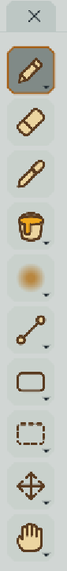
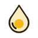
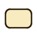
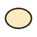

Инструменты
Инструменты
В программе 28 инструментов: рисование, фигуры, выделение, навигация и три специальных инструмента (освещение, зеркало, область затухания шума).
Панель Tools
Рядом с кнопками инструментов в Tool settings всегда видны значения по умолчанию: если параметр изменён, возле него появляется стрелка сброса.

Панель Tools показывает десять кнопок. Кнопка со стрелкой в углу скрывает семейство родственных инструментов: удерживайте её около 0,1 секунды (или кликните и подержите), появится меню вариантов. Отпустите кнопку мыши над нужным вариантом - он станет выбранным для этой кнопки. Простой клик выбирает тот инструмент, который сейчас показан на кнопке.
| Кнопка | Инструменты в семействе |
|---|---|
| 1 | Pencil, Spray |
| 2 | Eraser |
| 3 | Color picker |
| 4 | Fill, Gradient |
| 5 | Blur, Jumble, Frame lighting, Mirror |
| 6 | Line, Curve |
| 7 | Rectangle, Filled rectangle, Ellipse, Filled ellipse, Contour, Polygon |
| 8 | Rectangular marquee, Elliptical marquee, Lasso, Polygonal lasso, Magic wand |
| 9 | Move, Slice |
| 10 | Hand, Zoom |
Параметры выбранного инструмента показываются в панели Tool settings. Любой инструмент можно также выбрать в меню Tool. Клавиша Esc отменяет текущую операцию (вершины полигона, кривую, перетаскивание).
Сводная таблица
| Инструмент | Клавиша | Кратко |
|---|---|---|
| B | Рисование цветом с кистью любой формы | |
| Shift+B | Случайное напыление | |
| E | Стирание на активном слое | |
| I / Ctrl | Взять цвет и свойства пикселя | |
| G | Заливка по области или по цвету | |
| Shift+G | Градиент к конечному цвету | |
 Blur | - | Размытие кистью |
| - | Перемешивание пикселей кистью | |
| L | Прямая линия | |
| Shift+L | Изогнутая линия | |
| U | Контур прямоугольника | |
 Filled rectangle | - | Закрашенный прямоугольник |
| Shift+U | Контур эллипса или круга | |
 Filled ellipse | - | Закрашенный эллипс |
| D | Произвольная граница с заливкой | |
| Shift+D | Многоугольник по вершинам | |
| M | Прямоугольное выделение | |
| Shift+M | Эллиптическое выделение | |
| Q | Выделение от руки | |
| Shift+Q | Выделение по вершинам | |
| W | Выделение по цвету | |
| V | Перемещение выделения или ячейки | |
| H | Перемещение холста в окне | |
| Z | Масштаб перетаскиванием | |
| Shift+C | Именованные области с pivot и 9-slice | |
| - | Источник света кадра | |
| - | Ось симметрии на холсте | |
| - | Форма области затухания Auto noise |
Общие правила для всех инструментов рисования: они работают на активном слое и кадре; заблокированные и скрытые слои не изменяются; если есть активное выделение, рисование ограничено им; штрихи записываются в историю Undo. При включённых Mirror и Tile Repeat действие отражается/повторяется автоматически (подробнее).
Рисование
Pencil B
Основной инструмент рисования. Рисует текущим цветом палитры (Color Pencil) кистью заданного размера и формы. Зажмите Ctrl, чтобы временно переключиться на пипетку.
- Brush size - размер кисти в пикселях (1-50, по умолчанию 1); также меняется Ctrl+колесом на холсте.
- Brush shape - Square, Circle, Diamond или Custom. Для круга и квадрата доступен Brush corner radius (px).
- Custom - свой штамп до 32 x 32: кликайте по клеткам в окне Edit pencil stamp, меняйте Stamp width / Stamp height, загружайте штамп из JSON или прозрачного PNG, сохраняйте стиль (Save pencil style / Load pencil style). Кнопка Copy selection to pencil превращает текущее выделение (до 32 x 32, с закрашенными пикселями активного слоя) в штамп.
- Pixel-perfect - убирает лишние угловые пиксели при кисти 1 px, чтобы линия была «чистой».
- Advanced paint settings - параметры генерации для рисуемых пикселей: Body и Outline (включены ли), Chance (вероятность использования), AutoColor и цвета генерации. Они сохраняются в ячейках вместе с пикселями и определяют, как генераторы будут трактовать рисунок. См. Палитры.
 Spray Shift+B
Spray Shift+B
Напыление: на каждом шаге кисть закрашивает случайную часть своих пикселей. Параметр Density % (1-100, по умолчанию 25) задаёт долю закрашиваемых пикселей. Для спрея также доступны параметры рисования Body/Outline и Chance. Размер и форма кисти - как у карандаша.
 Eraser E
Eraser E
Стирает пиксели на активном слое (делает их прозрачными). Размер и форма кисти настраиваются так же, как у карандаша.
 Color picker I или удержание Ctrl
Color picker I или удержание Ctrl
Клик по пикселю на холсте берёт его цвет и свойства рисования (Body/Outline, Chance и др.). Пока инструмент пипетки активен, остальной выбор инструмента не теряется: при удержании Ctrl над холстом любой инструмент рисования временно работает как пипетка (вне холста Ctrl ничего не делает).
 Fill G
Fill G
Заливает область цветом. Два режима:
- Contiguous (по умолчанию) - заливается только связная область под курсором.
- Fill by color - заменяются все подходящие пиксели активного слоя (в пределах выделения, если оно есть).
- Tolerance (0-255, по умолчанию 0) - допуск различия цветов при определении «такого же» цвета.
В настройках Fill также доступны Fill/Outline параметры генерации для заливаемых пикселей (как у карандаша).
 Gradient Shift+G
Gradient Shift+G
Перетащите от точки с основным цветом к точке с End color. Градиент заполняет слой или активное выделение. Флажок Ordered dithering заменяет плавный переход упорядоченным дизерингом - так градиент остаётся «пиксельным» и использует ограниченное число цветов.
Blur
Кисть, которая смягчает переходы между цветами под ней. Параметр Strength (0,01-1, по умолчанию 0,5) - сила эффекта. Размер кисти задаётся как у карандаша.
 Jumble
Jumble
Кисть, перемешивающая пиксели под собой: полезна для «рваных» краёв, шума и текстуры. Strength задаёт интенсивность.
Линии и фигуры
 Line L
Line L
Протяните курсор между двумя пикселями - получится прямая линия толщиной в размер кисти.
 Curve Shift+L
Curve Shift+L
Протяните линию, затем перетащите концы или кликните/потяните в нужном месте, чтобы изогнуть кривую. Enter принимает прямую кривую, Esc отменяет.
 Rectangle / Filled rectangle U
Rectangle / Filled rectangle U
Протяните курсор по диагонали. Rectangle рисует контур, Filled rectangle - закрашенный прямоугольник. Толщина контура равна размеру кисти.
 Ellipse / Filled ellipse Shift+U
Ellipse / Filled ellipse Shift+U
Протяните курсор, чтобы нарисовать эллипс (или круг). Версия Filled закрашивает внутреннюю область.
 Contour D
Contour D
Обведите область от руки. После отпускания кнопки граница замыкается, а внутренняя область закрашивается.
 Polygon Shift+D
Polygon Shift+D
Кликайте, добавляя вершины. Двойной клик или Enter завершают многоугольник, Esc отменяет. Кнопки Finish и Cancel дублируют эти действия в Tool settings.
Выделение
Все инструменты выделения работают с общим набором режимов: Replace, Add, Subtract, Intersect (меню Select > Mode). Модификаторы клавиатуры: Shift - добавить, Ctrl или Alt - вычесть, Shift+Ctrl - пересечение. Delete очищает выделенные пиксели, Ctrl+D снимает выделение. Подробнее: Выделение и преобразование.
 Rectangular marquee M
Rectangular marquee M
Перетащите, чтобы выделить прямоугольник. Перетаскивание внутри выделения перемещает его пиксели.
 Elliptical marquee Shift+M
Elliptical marquee Shift+M
Перетащите, чтобы выделить эллипс.
 Lasso Q
Lasso Q
Обведите область от руки; при отпускании кнопки контур замыкается.
 Polygonal lasso Shift+Q
Polygonal lasso Shift+Q
Расставьте вершины кликами; двойной клик или Enter замыкает выделение.
 Magic wand W
Magic wand W
Выделяет пиксели, похожие по цвету на пиксель под курсором. Contiguous ограничивает выбор связной областью, Tolerance (0-255) задаёт допустимое различие цветов. Параметры доступны также в меню Select > Magic Wand.
Перемещение и навигация
 Move V
Move V
Перемещает выделение или, если выделения нет, всю активную ячейку (слой в текущем кадре). Esc отменяет перетаскивание, а Undo откатывает перемещение.
 Hand H
Hand H
Перетаскивайте в области холста, чтобы сдвинуть вид.
 Zoom Z
Zoom Z
Удерживайте левую кнопку мыши и тяните вправо, чтобы приблизить, влево - чтобы отдалить. Точка, с которой начато перетаскивание, остаётся неподвижной. F вписывает холст в окно.
 Slice Shift+C
Slice Shift+C
Создаёт именованные прямоугольные области («слайсы») документа: перетащите область, кликните по слайсу, чтобы выбрать его. В настройках:
- Name, X, Y, Width, Height - границы в координатах холста от левого верхнего угла.
- Pivot с относительными координатами Pivot X / Pivot Y.
- 9-slice center - центральная область для масштабируемых UI-элементов (Center X, Center Y, Center width, Center height).
- Export PNG - сохранить содержимое слайса; Delete slice - удалить.
Клавиша C (без Shift) отвечает за изменение размера холста: после нажатия потяните за край или угол.
Специальные инструменты
 Frame lighting
Frame lighting
Размещает источник света для текущего кадра: клик или перетаскивание по холсту двигает свет (для направленного света - задаёт направление от центра). Параметры освещения - в окне Lighting и в Tool settings. См. Освещение кадра.
 Mirror
Mirror
При выборе инструмента включаются симметрия и отображение осей; центр можно перетащить мышью. Параметры: переключатель Canvas symmetry, режим (During drawing / During generation), четыре независимые оси (лево-право, верх-низ и две диагонали), Show mirror lines, Center (px), Center in canvas. Esc выходит из инструмента. См. Зеркало и Tile Repeat.
Noise fade area
Появляется при редактировании области затухания Auto noise: перетаскивайте границы и углы, чтобы изменить форму силуэта шума. См. Auto noise.